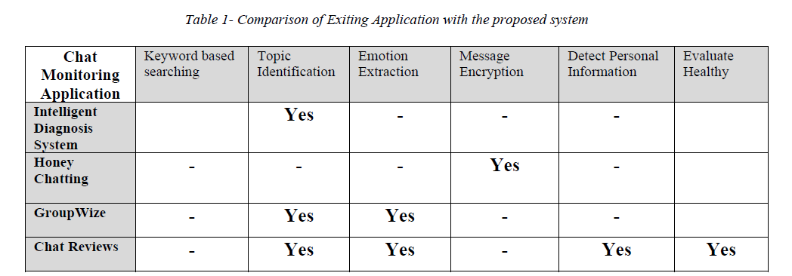

Literature survey
Chat is an increasingly important form of CMC (Computer-mediated communication). It is employed by many sectors of society to improve communication, create value, and commit crimes.
We explored chat monitoring system first and how it is used to monitor chat messages. Then, we explored technologies related Chat monitoring systems and some of them are Natural Language Processing (NLP), Machine Learning (ML), followed by its applicability to chat. And text mining and NLP are commonly used together for different purposes, and one of most common applications is social media monitoring, where an analysis is performed on a pool of user-generated content to understand mood, emotions and awareness related to a topic.
Nowadays most of chat monitoring system use Machine learning algorithms for text classification. One of the main ML problems is text classification, which is used, for example, to detect spam, define the topic of a news article, or choose the correct mining of a multi-valued word. The Statsbot team has already written how to train your own model for detecting spam emails, spam messages, and spam user comments. And it’s impossible to define the best text classifier. In fields such as computer vision, there’s a strong consensus about a general way of designing models − deep networks with lots of residual connections. Unlike that, text classification is still far from convergence on some narrow area.
Research Gap
When comparing Chat Reviews web application with existing applications our one based on mainly analyzing trustworthiness of the chatting partner. So when we compare existing chat monitoring applications with our one it only allows user for simple chat analysis features. So in that case other than the basic functions like keyword based search, topic identification emotion extraction, we gave a new functions (new message analytical areas) such as Detect Personal Information and Evaluate Healthy. This is not available on current any of the chat monitoring application.
Research Problem
Nowadays we meet strangers all the time in our day to day life. So we attempt to have partnership with them without any hesitation at all. Also some time they are more and more smart than we think, then it’s very difficult to identify the characteristics by only looking at their messages. Nowadays it is highly required to have intelligent way to detect those frauds (may be what that message really mean). We found that the solution is to use chat monitoring application for online chatting. Then we can review our messages in analytical way or it will lead us to think about our chatting partner in analytical way.
The research problem to be addressed by this research was identified as reviewing chat session in analytical way. A separate background analysis was carried on the usage of chat monitoring system and the possibility of developing such kinds of real world system. Before developing the Chat Reviews Application based on machine learning concept, the project team went through a large amount of research papers to identify the main problems that need to be addressed when implementing the system. With the researches already done we got to know the existing technologies as well as upcoming technologies and algorithms and how to develop this system by modules.
It became clear that a unique system could be implemented by machine learning algorithms. And it was necessary to search for the most suitable machine learning technologies for implementing our system.